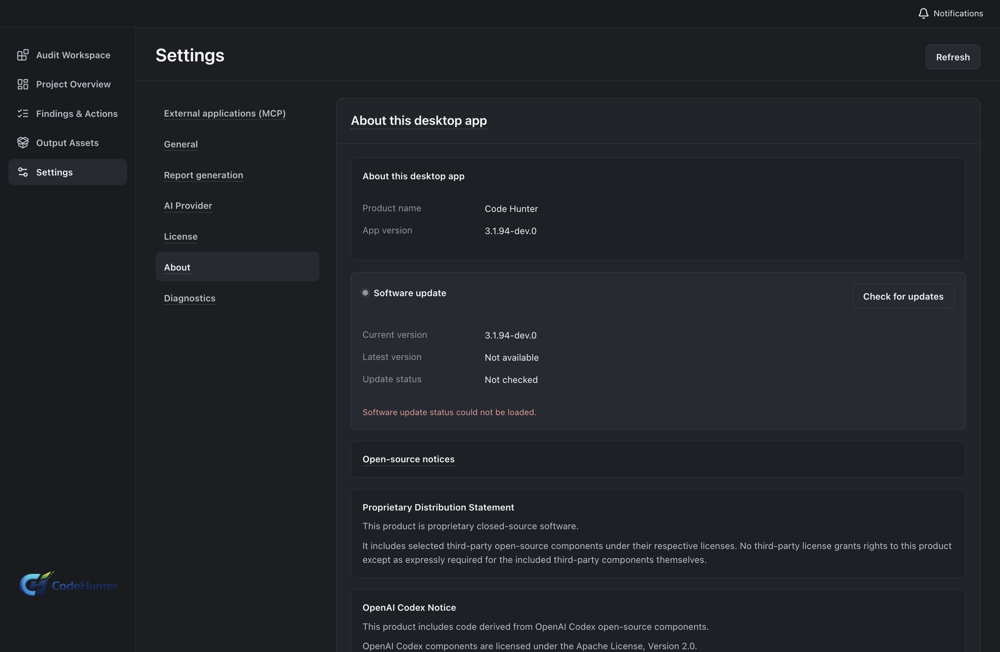
Confirm the edition before credentials
Open Settings → About and verify Personal, 3.1.94, and the channel in the same app instance that owns the catalog.
Next: license and activation
A visual path through Code Hunter Personal and Team. Follow the cards in order, open a screenshot to inspect the control, then use the linked Markdown guide when you need every field, decision, and recovery path.
Each edition moves from a bounded source context to a human decision, then to a reversible fix and verification record.
Why this order? Mature security tools put project onboarding, result exploration, prioritization and remediation in one continuous story. Code Hunter keeps that story source-bound: a provider test does not activate the product, a generated patch is not a verified fix, and an MCP connection does not grant new project access.
Use Personal for a local project and one operator. The full field-by-field workflow is in the Personal Markdown tutorial and the official visual tutorial.

Open Settings → About and verify Personal, 3.1.94, and the channel in the same app instance that owns the catalog.
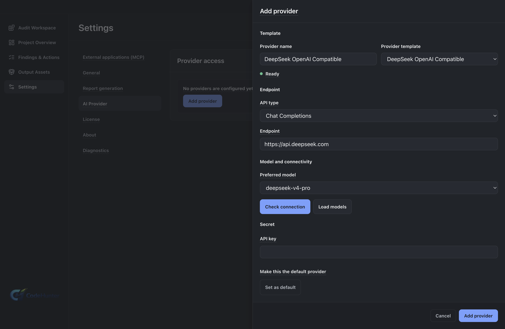
Choose the preset, base URL, model and protected key field. Save, test, reload, then make it the default.
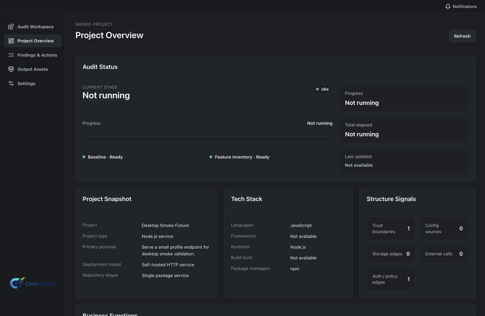
Confirm the project name, source root, workspace and exclusions before any model or scanner run.
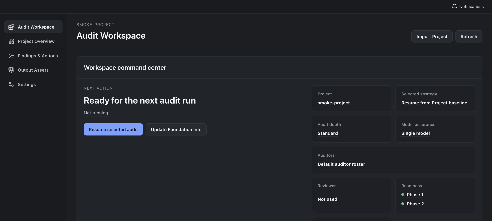
Select audit depth, model assurance and the intended feature inventory. Keep generated output outside the source scope.
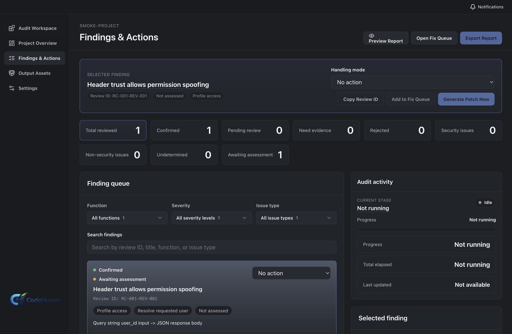
Inspect severity, confidence, affected behavior, source evidence and proof. Accept, reject, downgrade or defer with a reason.
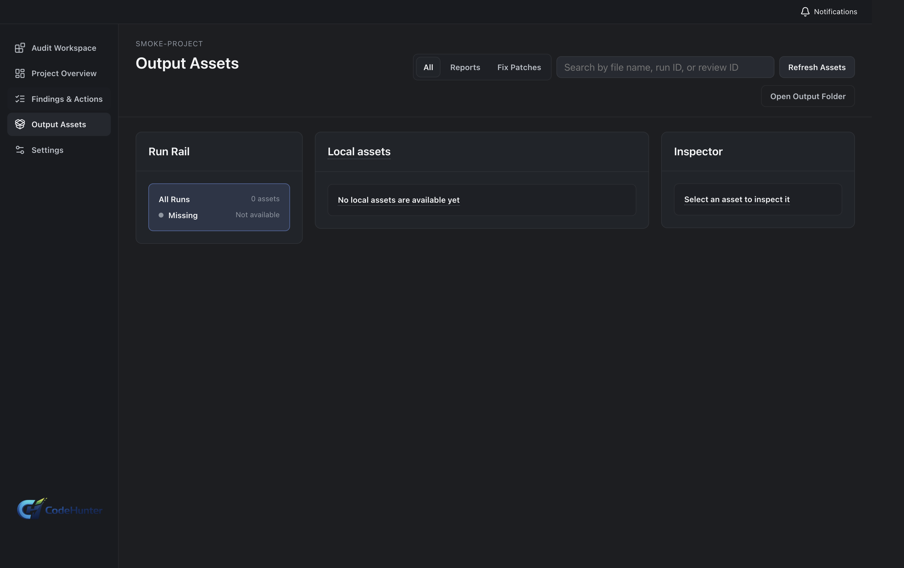
Preview scope, assumptions, test command and rollback before applying a package. Run tests and keep the working tree checkpoint.
Team adds workspace roles, source control, baselines, release policy and owned remediation. Continue in the Team Markdown tutorial and the official visual tutorial.
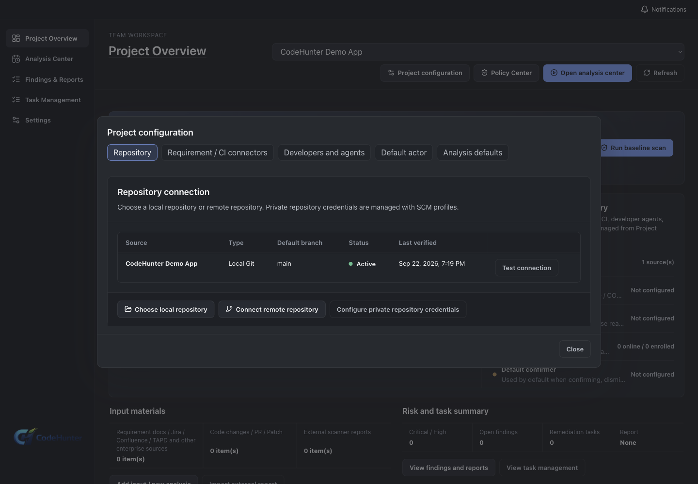
Set the SCM profile, source type and default branch. Test the connection and list refs before choosing a baseline.
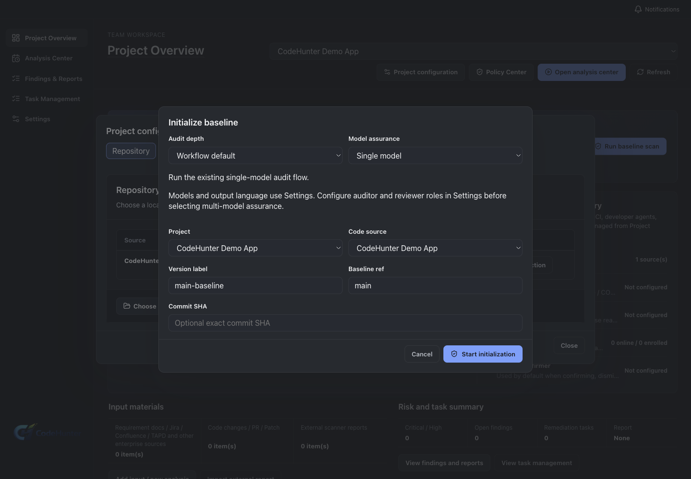
Choose a verified branch, tag or SHA. A repository URL alone is not a baseline revision.
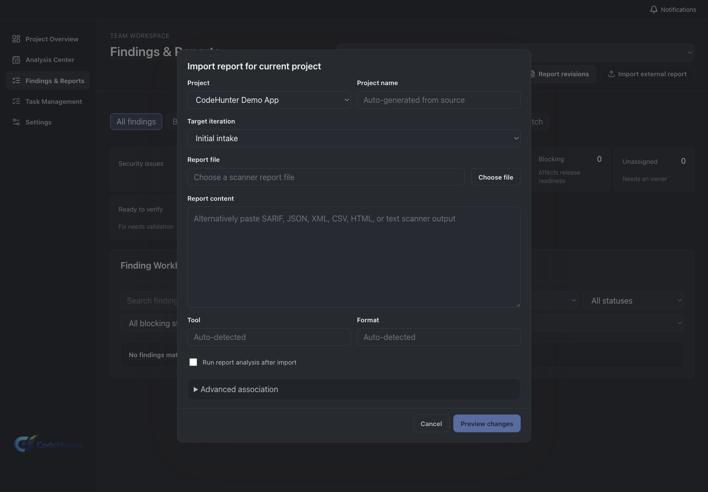
Bind scanner, project, branch, commit and report date before running external report analysis.
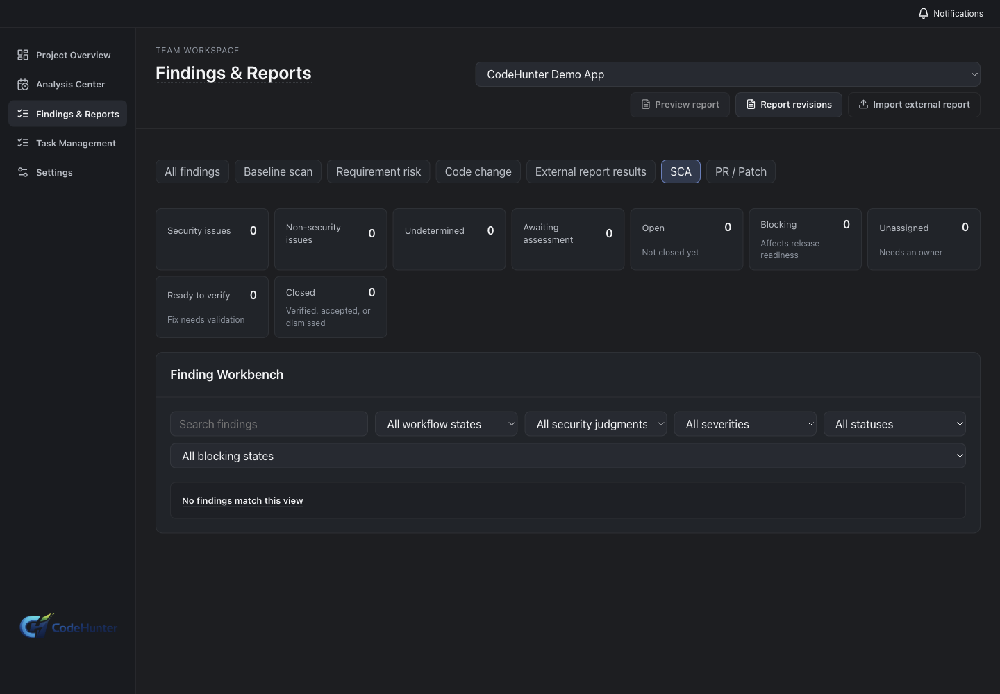
Set severity, exploitability, license policy, exception expiry and owner approval before evaluating readiness.
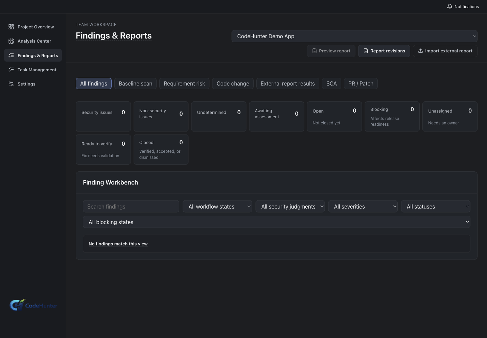
Review evidence, assign an owner, create a remediation task and write acceptance criteria.
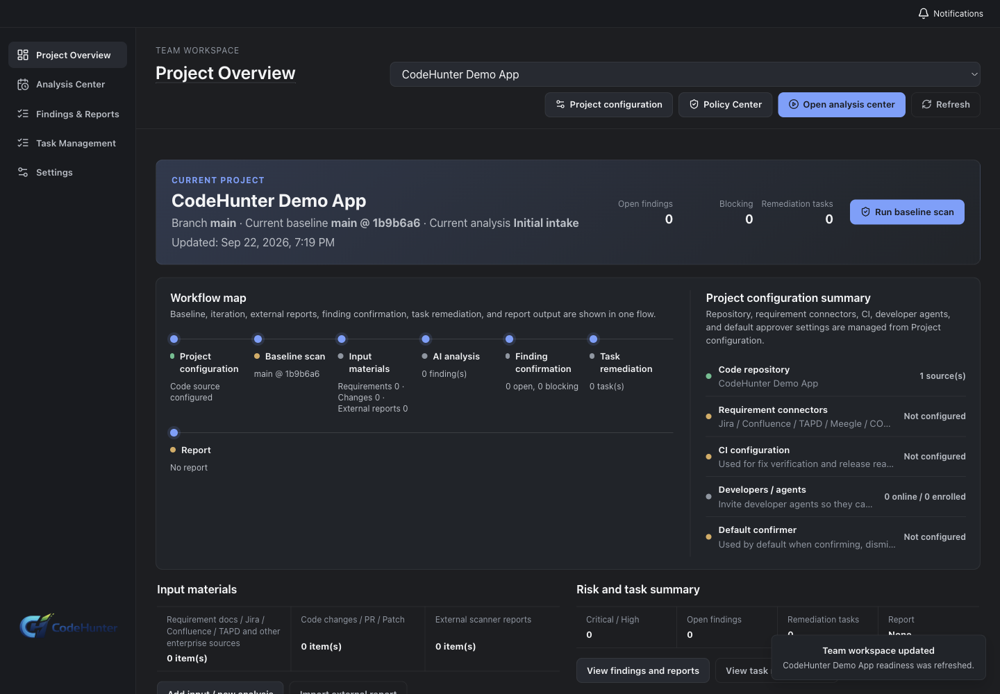
Attach CI evidence to the same commit and explain Blocked, Pending verification, Pass with risk or Ready.
MCP is a local STDIO connector to the matching desktop edition. IDE packages are Team-only and include the four-platform agent/LSP layout.
Scope projects, choose read-only or development collaboration, copy the client configuration, inspect request history and revoke a connection. Personal and Team connectors are not interchangeable.
Verify SHA-256, install VSIX or JetBrains ZIP, enroll the agent, open Remediation Inbox, preview patches, run tests and hand off a PR. Native IDE screenshots were not available for this capture environment.
MCP does not import arbitrary projects, execute arbitrary commands, accept risk, approve release or promote a baseline without the desktop and Team policy confirmation.
Screenshot manifest records source commit, edition, step id, capture method, SHA-256 and redaction status. The version matrix separates dev UI evidence from official entitlement.
Good product documentation makes the evidence boundary visible instead of making an empty state look like a production entitlement.
Proven here: English renderer paths, current labels, isolated Personal and Team user-data directories, neutral demo project persistence and screenshot integrity. Not executed here: server-backed production activation, paid entitlement, native folder picker, native VS Code/JetBrains install, and a real Team tenant with remote SCM credentials. Those steps remain in the guides with expected success states and recovery paths.
3.1.94-dev.0 from source commit e4b6868; Team IDE metadata and packages are tied to tooling commit 3183258.
No provider secret, license key, activation code, enrollment code, internal URL or real project path belongs in this page, a screenshot, or the public repository.